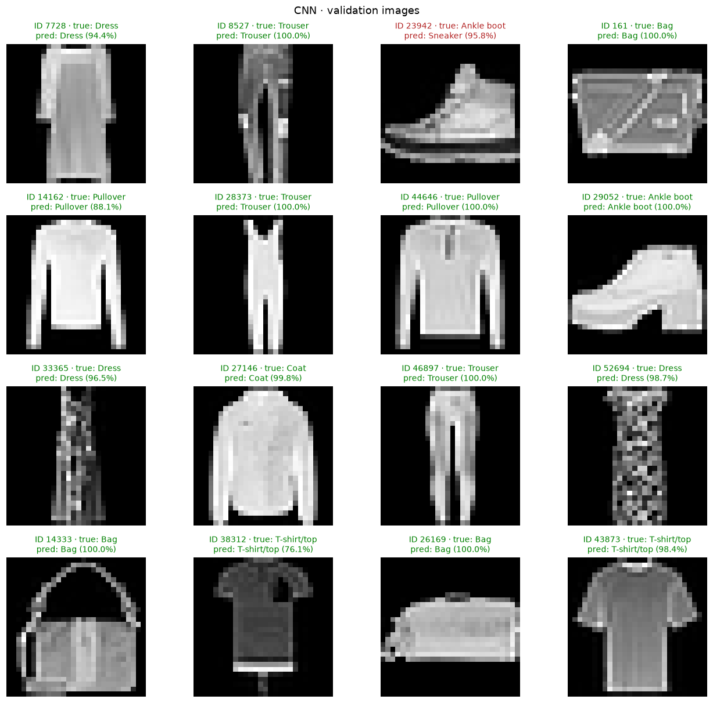
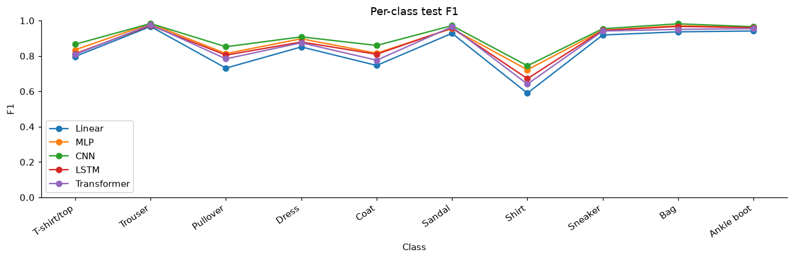
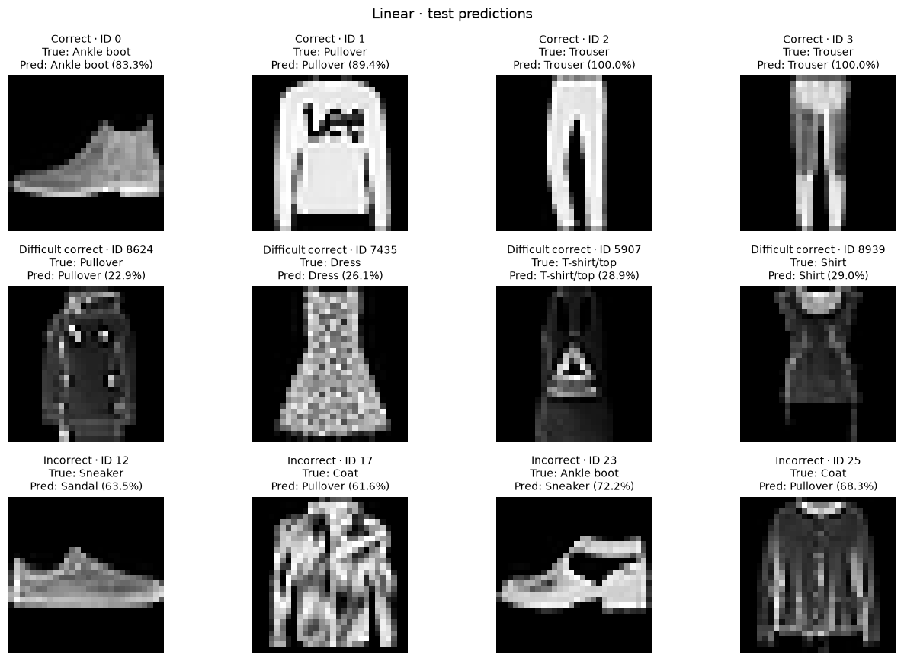
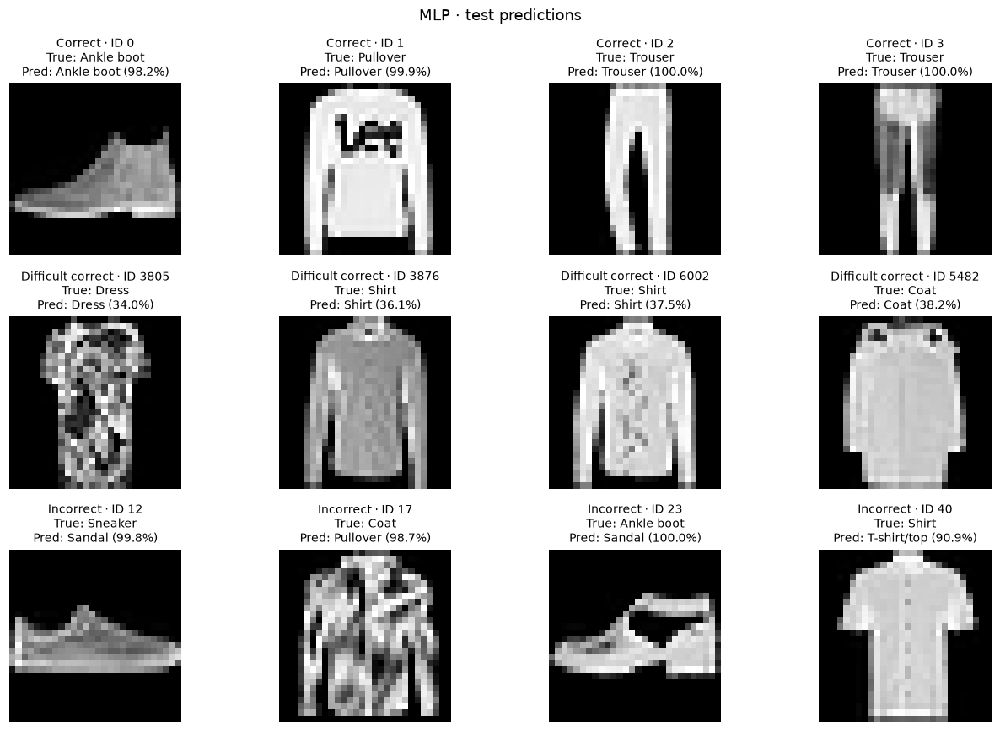
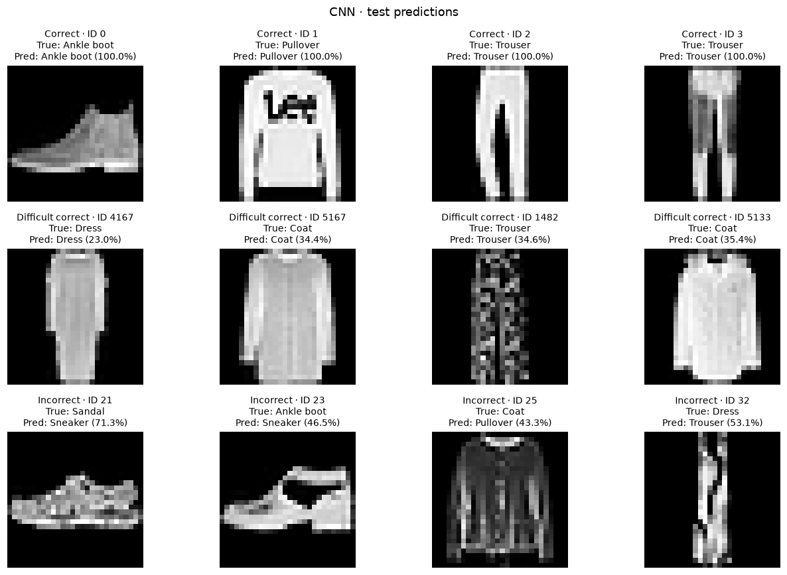
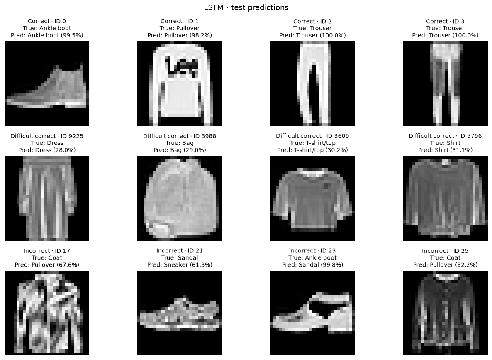
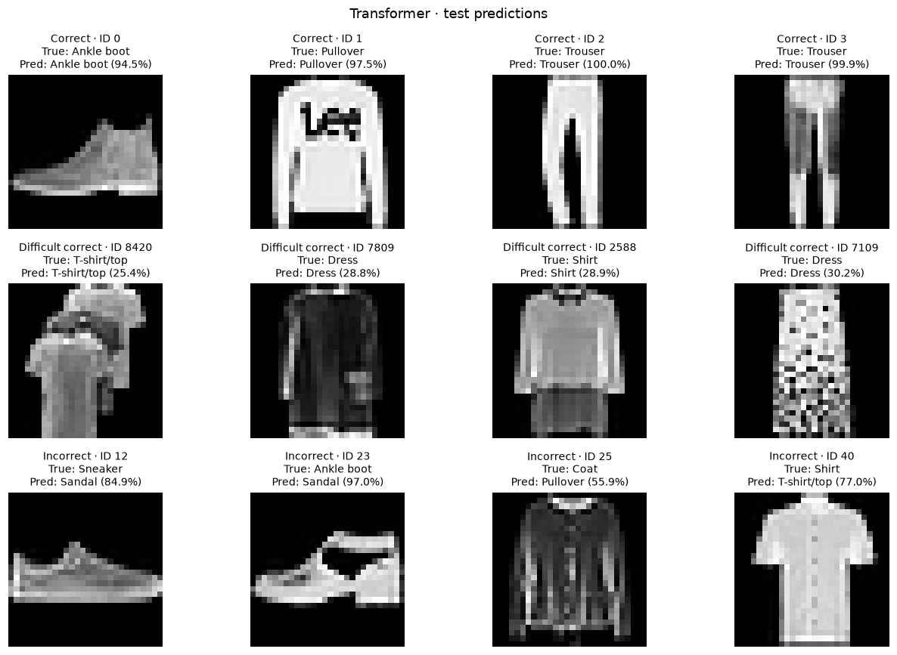
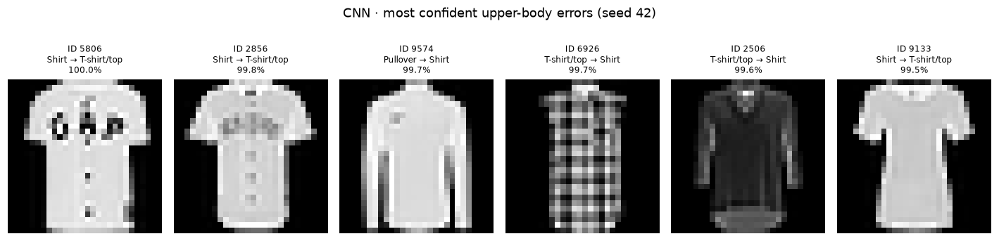
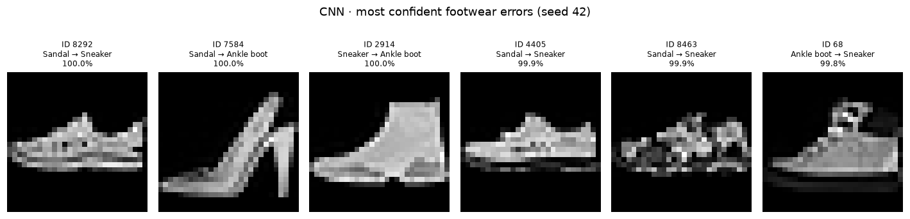

1. Model definitions
All five models receive normalized images [B, 1, 28, 28] and return ten raw logits [B, 10]. Cross-entropy receives the logits directly. Softmax gives class probabilities only after prediction. All models train for 16 epochs, and validation macro-F1 selects best.pt. There is no dropout, weight decay or augmentation. Gradient clipping limits the gradient norm to 5.
| Model | Input to the model | Layers | Parameters |
|---|---|---|---|
| Linear | Flattened image, 784 values | Linear(784, 10). No hidden layer and no nonlinear activation. This is the baseline. | 7,850 |
| MLP | Flattened image, 784 values | 784 → 256 → 10, ReLU after the hidden layer. Dense layers do not encode spatial neighborhoods. | 203,530 |
| CNN | Image, 1 × 28 × 28 | Two padded 3 × 3 convolutions (16 and 32 channels), each with ReLU and 2 × 2 max-pooling: 16 × 14 × 14 → 32 × 7 × 7. Then 1568 → 64 → 10. | 105,866 |
| LSTM | 28 rows of 28 pixels, top to bottom | One unidirectional LSTM layer, hidden size 64. The final hidden state [B, 64] goes to Linear(64, 10). | 24,714 |
| Transformer | 49 patches of 4 × 4 pixels | Patch projection 16 → 32 plus learned positions. Two encoder layers, four heads of eight features, feedforward 32 → 64 → 32. Mean of the 49 tokens, then Linear(32, 10). | 19,530 |
The full definitions, shapes and code links are on the Methods page.
2. Saved runs
The page uses the latest evaluated run for each model and training seed. Seed 42 is the predefined primary run. The main comparison and the model selection use seed 42. Seeds 43–46 measure training variability only, and they do not change the model selection.
Each run completes 16 epochs. best.pt keeps the weights with the highest validation macro-F1. checkpoint.pt keeps the final epoch-16 training checkpoint. Evaluation and all predictions on this page use best.pt. We report test results after the selection.
| Model | Seed | Run folder |
|---|---|---|
| Linear | 42 | Linear_seed42_20261004_112711_707300 |
| Linear | 43 | Linear_seed43_20261004_113159_558288 |
| Linear | 44 | Linear_seed44_20261004_113639_845914 |
| Linear | 45 | Linear_seed45_20261004_114119_111436 |
| Linear | 46 | Linear_seed46_20261004_114549_854057 |
| MLP | 42 | MLP_seed42_20261004_112718_608623 |
| MLP | 43 | MLP_seed43_20261004_113204_238449 |
| MLP | 44 | MLP_seed44_20261004_113644_269789 |
| MLP | 45 | MLP_seed45_20261004_114123_603342 |
| MLP | 46 | MLP_seed46_20261004_114554_221176 |
| CNN | 42 | CNN_seed42_20261004_112729_015620 |
| CNN | 43 | CNN_seed43_20261004_113212_161432 |
| CNN | 44 | CNN_seed44_20261004_113652_522684 |
| CNN | 45 | CNN_seed45_20261004_114131_753001 |
| CNN | 46 | CNN_seed46_20261004_114602_169724 |
| LSTM | 42 | LSTM_seed42_20261004_112923_087239 |
| LSTM | 43 | LSTM_seed43_20261004_113401_995939 |
| LSTM | 44 | LSTM_seed44_20261004_113842_321863 |
| LSTM | 45 | LSTM_seed45_20261004_114314_531323 |
| LSTM | 46 | LSTM_seed46_20261004_114745_165922 |
| Transformer | 42 | Transformer_seed42_20261004_113011_320991 |
| Transformer | 43 | Transformer_seed43_20261004_113450_196969 |
| Transformer | 44 | Transformer_seed44_20261004_113931_387198 |
| Transformer | 45 | Transformer_seed45_20261004_114403_210884 |
| Transformer | 46 | Transformer_seed46_20261004_114833_528269 |
There are 25 evaluated runs: five models × five training seeds (42, 43, 44, 45 and 46). All runs share the 54,000/6,000 training/validation split and the official 10,000-image test set. All 25 runs complete 16 epochs. One environment trained all 25 main runs: Python 3.11.16 and PyTorch 2.14.0. The Run history lists every run.
3. Validation comparison
Accuracy and macro-F1 use the same selected checkpoint. The accuracy gap is training accuracy minus validation accuracy, in percentage points (pp). The gap uses those fixed weights. All values are for seed 42.
| Model | Accuracy | Macro-F1 | Selected epoch | Epochs run | Train–validation gap (pp) |
|---|---|---|---|---|---|
| Linear | 0.8653 | 0.8658 | 12 | 16 | 0.2944 |
| MLP | 0.9073 | 0.9075 | 14 | 16 | 3.9389 |
| CNN | 0.9233 | 0.9237 | 13 | 16 | 2.5944 |
| LSTM | 0.8965 | 0.8970 | 13 | 16 | 0.5889 |
| Transformer | 0.8842 | 0.8833 | 16 | 16 | 0.7704 |
CNN has the highest validation macro-F1, 0.9237, at the selected epoch 13. Its validation accuracy is 92.33%. MLP has 90.73% and Linear has 86.53%. The MLP increases validation accuracy by 4.20 percentage points over the linear baseline.
At the selected weights, the training-minus-validation accuracy gap is 3.94 points for MLP and 2.59 points for CNN. LSTM and Transformer have smaller gaps, 0.59 and 0.77 points, but they also have lower validation scores. Thus, a small gap alone does not identify the strongest model. The Linear gap is 0.29 points on this split.
| Model | Parameters | Fit time (s) | Validation (ms/image) | Test (ms/image) |
|---|---|---|---|---|
| Linear | 7,850 | 5.3304 | 0.0013 | 0.0012 |
| MLP | 203,530 | 9.4023 | 0.0019 | 0.0021 |
| CNN | 105,866 | 111.5600 | 0.0276 | 0.0268 |
| LSTM | 24,714 | 46.2154 | 0.0244 | 0.0223 |
| Transformer | 19,530 | 103.2867 | 0.0553 | 0.0550 |
Linear is the smallest model, with 7,850 parameters. CNN has 105,866 parameters, approximately 52% of the 203,530 MLP parameters. But CNN test inference takes 0.0268 ms/image, and MLP takes 0.0021 ms/image. Shared convolution weights decrease the parameter count, but the spatial computation repeats at each image location. LSTM and Transformer are smaller again, but their recurrent and attention operations cost more than MLP inference here.
Training and inference ran in sequence on CPU with four PyTorch threads. For seed 42, the fit times are Linear 5.33 s, MLP 9.40 s, CNN 111.56 s, LSTM 46.22 s and Transformer 103.29 s. Each model completed 16 epochs. Fit time includes validation and checkpoint work in addition to the parameter updates.
Inference uses one warm-up pass, then the median of three complete passes. A pass includes batching, forward computation and argmax. It does not include the metric calculation. These values are batched throughput times per image, not single-image request latency. Section 6 gives the mean fit times over five seeds. All timings come from one machine, so compare them only within this session.
4. Held-out test results
The official test set evaluates each checkpoint that validation selected before. The validation-selected model stays fixed when we read the test results.
| Model | Loss | Accuracy | Macro-F1 | Inference (ms/image) |
|---|---|---|---|---|
| Linear | 0.4438 | 0.8403 | 0.8408 | 0.0012 |
| MLP | 0.3463 | 0.8897 | 0.8899 | 0.0021 |
| CNN | 0.2621 | 0.9084 | 0.9088 | 0.0268 |
| LSTM | 0.3384 | 0.8776 | 0.8781 | 0.0223 |
| Transformer | 0.3571 | 0.8688 | 0.8673 | 0.0550 |
The validation-selected CNN gets 90.84% test accuracy and 0.9088 macro-F1. This test accuracy is 1.49 percentage points below its validation accuracy. The test accuracies are Linear 84.03%, MLP 88.97%, CNN 90.84%, LSTM 87.76% and Transformer 86.88%.
MLP is 4.94 percentage points better than Linear, and CNN adds 1.87 points over MLP. The validation ranking and the test ranking agree in this run. Section 6 shows the same ranking for all five seeds. These results apply to these implementations. They are not a universal ranking of architecture families.
5. Learning curves
This section uses the seed-42 run of each model. Each run saves learning_curves.png with loss, accuracy and macro-F1 for each epoch. Dashed lines show training metrics that the run collects during the updates. Solid lines show validation after each epoch. The vertical line marks the selected checkpoint.
| Model | Run folder |
|---|---|
| Linear | Linear_seed42_20261004_112711_707300 |
| MLP | MLP_seed42_20261004_112718_608623 |
| CNN | CNN_seed42_20261004_112729_015620 |
| LSTM | LSTM_seed42_20261004_112923_087239 |
| Transformer | Transformer_seed42_20261004_113011_320991 |


| Model | Selected epoch | Loss, selected | Loss, epoch 16 | Macro-F1, selected | Macro-F1, epoch 16 |
|---|---|---|---|---|---|
| Linear | 12 | 0.3886 | 0.4003 | 0.8658 | 0.8577 |
| MLP | 14 | 0.2870 | 0.2942 | 0.9075 | 0.9023 |
| CNN | 13 | 0.2210 | 0.2284 | 0.9237 | 0.9210 |
| LSTM | 13 | 0.3001 | 0.2942 | 0.8970 | 0.8963 |
| Transformer | 16 | 0.3158 | 0.3158 | 0.8833 | 0.8833 |
All models complete 16 epochs. Linear selects epoch 12. Its validation macro-F1 is 0.8658 at epoch 12 and 0.8577 at epoch 16, and its validation loss increases from 0.3886 to 0.4003. MLP selects epoch 14. Its training loss continues to decrease, but its validation loss increases from 0.2870 to 0.2942 by epoch 16. Thus, the later weights do not always generalize better.
CNN selects epoch 13. By epoch 16, its validation loss increases from 0.2210 to 0.2284, and its macro-F1 decreases from 0.9237 to 0.9210. LSTM gets 0.8970 at epoch 13 and at epoch 15, and the earliest-tie rule keeps epoch 13. Transformer selects epoch 16, the final epoch of the fixed schedule. Thus, its optimization possibly did not converge. Read its score as a result of the 16-epoch setting, not as the maximum that the architecture can get.
For Linear, MLP, CNN and LSTM, best.pt and the final checkpoint.pt contain weights from different epochs. Evaluation uses best.pt. The dashed training curves come from the updates, so they are different from the fixed-checkpoint training metrics in Section 3.
5.1 Validation images
Each saved validation file contains all 6,000 raw images with their original training-file IDs, labels, predictions and probabilities. The table counts the correct predictions at the selected checkpoint of each model. The gallery shows the first 16 validation images for CNN, the validation-selected model. Green titles are correct predictions. Red titles are incorrect predictions.
| Model | Correct | Total | Accuracy |
|---|---|---|---|
| Linear | 5,192 | 6,000 | 0.8653 |
| MLP | 5,444 | 6,000 | 0.9073 |
| CNN | 5,540 | 6,000 | 0.9233 |
| LSTM | 5,379 | 6,000 | 0.8965 |
| Transformer | 5,305 | 6,000 | 0.8842 |


The CNN page shows 15 correct predictions out of 16. CNN predicts Ankle boot #23942 as Sneaker with 95.8% confidence. This is a confident footwear error on a page that is almost all correct. The file order sets which examples show. The table uses all 6,000 predictions of each model, and CNN gets 5,540 correct (92.33%).
6. Training-seed variability
Each model has the latest completed run for seeds 42–46 on the shared data split. The sample standard deviation (SD) needs a minimum of two different seeds. The SD measures training variability on this split. It does not measure uncertainty across datasets.
| Model | Metric | Seed 42 | Seed 43 | Seed 44 | Seed 45 | Seed 46 |
|---|---|---|---|---|---|---|
| Linear | Accuracy | 0.8653 | 0.8652 | 0.8647 | 0.8660 | 0.8645 |
| Linear | Macro-F1 | 0.8658 | 0.8658 | 0.8645 | 0.8650 | 0.8644 |
| MLP | Accuracy | 0.9073 | 0.9037 | 0.9048 | 0.9053 | 0.9060 |
| MLP | Macro-F1 | 0.9075 | 0.9034 | 0.9042 | 0.9051 | 0.9065 |
| CNN | Accuracy | 0.9233 | 0.9272 | 0.9238 | 0.9247 | 0.9287 |
| CNN | Macro-F1 | 0.9237 | 0.9270 | 0.9240 | 0.9249 | 0.9286 |
| LSTM | Accuracy | 0.8965 | 0.8997 | 0.8995 | 0.8967 | 0.8980 |
| LSTM | Macro-F1 | 0.8970 | 0.8991 | 0.8994 | 0.8970 | 0.8977 |
| Transformer | Accuracy | 0.8842 | 0.8892 | 0.8862 | 0.8870 | 0.8808 |
| Transformer | Macro-F1 | 0.8833 | 0.8877 | 0.8864 | 0.8869 | 0.8796 |
| Model | Runs | Accuracy mean | Accuracy SD | Macro-F1 mean | Macro-F1 SD |
|---|---|---|---|---|---|
| Linear | 5 | 0.8651 | 0.0006 | 0.8651 | 0.0007 |
| MLP | 5 | 0.9054 | 0.0014 | 0.9054 | 0.0017 |
| CNN | 5 | 0.9255 | 0.0023 | 0.9256 | 0.0021 |
| LSTM | 5 | 0.8981 | 0.0015 | 0.8980 | 0.0011 |
| Transformer | 5 | 0.8855 | 0.0031 | 0.8848 | 0.0033 |
| Model | Runs | Accuracy (%), mean ± SD | Macro-F1 (%), mean ± SD | Mean fit time (s) |
|---|---|---|---|---|
| Linear | 5 | 84.17 ± 0.08 | 84.15 ± 0.11 | 4.15 |
| MLP | 5 | 88.77 ± 0.26 | 88.77 ± 0.23 | 7.77 |
| CNN | 5 | 91.26 ± 0.28 | 91.27 ± 0.27 | 105.36 |
| LSTM | 5 | 88.11 ± 0.25 | 88.10 ± 0.21 | 46.37 |
| Transformer | 5 | 87.15 ± 0.39 | 87.06 ± 0.36 | 102.85 |
| Comparison | Seeds | Mean difference (pp) | Minimum (pp) | Maximum (pp) | A better |
|---|---|---|---|---|---|
| MLP − Linear | 5 | 4.62 | 4.31 | 4.92 | 5/5 |
| CNN − MLP | 5 | 2.50 | 1.89 | 2.86 | 5/5 |
| LSTM − MLP | 5 | −0.66 | −1.18 | −0.14 | 0/5 |
| CNN − LSTM | 5 | 3.16 | 3.01 | 3.36 | 5/5 |
| LSTM − Transformer | 5 | 1.04 | 0.48 | 1.57 | 5/5 |
Each model has five evaluated training seeds (42–46). Validation macro-F1 changes little within a model. Its SD is between 0.07 percentage points (Linear) and 0.33 percentage points (Transformer). Test macro-F1 (mean ± SD, %) is Linear 84.15 ± 0.11, MLP 88.77 ± 0.23, CNN 91.27 ± 0.27, LSTM 88.10 ± 0.21 and Transformer 87.06 ± 0.36.
When we pair the runs by seed, CNN is better than MLP by 2.50 points on average (range 1.89 to 2.86), in 5/5 seeds. MLP is better than Linear by 4.62 points, in 5/5 seeds. LSTM is below MLP in each seed (0.66 points on average) and above Transformer in each seed (1.04 points on average). Thus, the ranking CNN > MLP > LSTM > Transformer > Linear is the same for all five seeds. This result measures training variability on one split. We do not use five seeds to claim statistical significance.
7. Test confusion matrices
Rows are the true classes, and columns are the predictions. Each cell gives the number of test images for that decision. Each model predicts all 10,000 test images (seed 42). Each row has 1,000 images. Compare the clothing confusions with the visual similarities in the data exploration.


All five models make many errors between T-shirt/top, Shirt, Pullover and Coat. This result supports the EDA hypothesis: similar upper-body silhouettes cause ambiguity. CNN decreases the Pullover → Coat errors from 130 (Linear) to 75. But the largest CNN error is Shirt → T-shirt/top, with 104 cases. A better overall score does not improve all class pairs equally: MLP still makes 143 T-shirt/top → Shirt errors, and Linear makes 147.
Each true class has 1,000 test images. Thus, divide a count by ten to get the percentage within the class. Shirt can get many false positives, also when the model recognizes most true shirts correctly.
| Class | Linear | MLP | CNN | LSTM | Transformer |
|---|---|---|---|---|---|
| T-shirt/top | 0.797 | 0.835 | 0.866 | 0.813 | 0.809 |
| Trouser | 0.967 | 0.983 | 0.984 | 0.972 | 0.977 |
| Pullover | 0.731 | 0.814 | 0.852 | 0.805 | 0.784 |
| Dress | 0.851 | 0.897 | 0.908 | 0.879 | 0.875 |
| Coat | 0.746 | 0.816 | 0.860 | 0.810 | 0.776 |
| Sandal | 0.928 | 0.955 | 0.972 | 0.958 | 0.965 |
| Shirt | 0.589 | 0.722 | 0.745 | 0.672 | 0.641 |
| Sneaker | 0.919 | 0.945 | 0.954 | 0.945 | 0.941 |
| Bag | 0.937 | 0.971 | 0.982 | 0.967 | 0.951 |
| Ankle boot | 0.941 | 0.962 | 0.965 | 0.960 | 0.955 |


Shirt is the weakest class for each model. Its F1 is between 0.589 (Linear) and 0.745 (CNN). The CNN F1 is 0.984 for Trouser and 0.982 for Bag. Thus, the difficulty changes much between classes, although the class counts are equal. CNN improves Shirt F1 over the MLP value of 0.722, but much overlap between upper-body garments stays. Macro-F1 keeps the contribution of this weak class. Overall accuracy alone does not show it.
| Model | True | Predicted | Count | Class error rate |
|---|---|---|---|---|
| Linear | T-shirt/top | Shirt | 147 | 0.147 |
| Linear | Pullover | Coat | 130 | 0.130 |
| Linear | Shirt | T-shirt/top | 121 | 0.121 |
| Linear | Shirt | Pullover | 119 | 0.119 |
| Linear | Shirt | Coat | 114 | 0.114 |
| MLP | T-shirt/top | Shirt | 143 | 0.143 |
| MLP | Coat | Pullover | 106 | 0.106 |
| MLP | Shirt | T-shirt/top | 84 | 0.084 |
| MLP | Shirt | Pullover | 82 | 0.082 |
| MLP | Pullover | Coat | 73 | 0.073 |
| CNN | Shirt | T-shirt/top | 104 | 0.104 |
| CNN | T-shirt/top | Shirt | 94 | 0.094 |
| CNN | Pullover | Shirt | 83 | 0.083 |
| CNN | Pullover | Coat | 75 | 0.075 |
| CNN | Coat | Shirt | 66 | 0.066 |
| LSTM | Shirt | T-shirt/top | 137 | 0.137 |
| LSTM | T-shirt/top | Shirt | 129 | 0.129 |
| LSTM | Pullover | Shirt | 104 | 0.104 |
| LSTM | Coat | Shirt | 84 | 0.084 |
| LSTM | Coat | Pullover | 82 | 0.082 |
| Transformer | Coat | Pullover | 148 | 0.148 |
| Transformer | T-shirt/top | Shirt | 142 | 0.142 |
| Transformer | Shirt | Pullover | 118 | 0.118 |
| Transformer | Shirt | T-shirt/top | 108 | 0.108 |
| Transformer | Shirt | Coat | 100 | 0.100 |
The five most frequent CNN errors are Shirt → T-shirt/top (104; 10.4% of true shirts), T-shirt/top → Shirt (94), Pullover → Shirt (83), Pullover → Coat (75) and Coat → Shirt (66). Four of these five errors include Shirt. For CNN, the two T-shirt/Shirt directions have similar counts (104 and 94). Linear and MLP make many more T-shirt/top → Shirt errors than Shirt → T-shirt/top errors (147 and 121; 143 and 84). Thus, it is important to read the errors by direction.
8. Inspect predictions
Each gallery shows three rows for one model (seed 42). Row 1 shows the first four correct predictions in test-file order. Row 2 shows the four correct predictions with the lowest confidence. Row 3 shows the first four incorrect predictions in test-file order. Confidence is the largest softmax probability, and it is not a calibrated guarantee. The IDs refer to the official test image file.










CNN correctly recognizes the first boot, the printed pullover and two trousers, which have clear, broad silhouettes. Its low-confidence correct cases include Dress #4167 at 23.0% and Coat #5167 at 34.4%. These garments have plain, long outlines that several classes share. They show that the correct class can win with low confidence.
Transformer predicts Sneaker #12 as Sandal at 84.9% and Ankle boot #23 as Sandal at 97.0%. Image #23 has a heel and a large dark opening, so it has features similar to a sandal, although its label is Ankle boot. CNN also misses #23 (Sneaker, 46.5%). CNN predicts Sandal #21 as Sneaker (71.3%), dark Coat #25 as Pullover (43.3%) and narrow Dress #32 as Trouser (53.1%). These examples show visual ambiguity. They do not prove that the dataset labels are wrong.
The correct Transformer example with the lowest confidence is T-shirt/top #8420 at 25.4%, an image with overlapping garments. Its difficult row also contains Dress #7809 at 28.8%, Shirt #2588 at 28.9% and Dress #7109 at 30.2%. These garments have features that other categories also have. Softmax confidence can be high on errors and low on correct decisions. The first four errors are a fixed inspection sample. They do not estimate the overall error distribution.
9. Error analysis
This section puts the seed-42 test errors into groups of similar classes. The upper-body group is T-shirt/top, Pullover, Coat and Shirt. The footwear group is Sandal, Sneaker and Ankle boot. An upper-body error has the true class and the predicted class both in the upper-body group. A footwear error has both classes in the footwear group. All other errors are other. A confident error is an error with confidence 0.9 or higher. Confident errors overlap the three groups.
| Model | All errors | Upper-body | Footwear | Other | Confident (p ≥ 0.9) |
|---|---|---|---|---|---|
| Linear | 1,597 | 964 | 199 | 434 | 157 |
| MLP | 1,103 | 701 | 132 | 270 | 246 |
| CNN | 916 | 582 | 106 | 228 | 184 |
| LSTM | 1,224 | 767 | 132 | 325 | 135 |
| Transformer | 1,312 | 806 | 131 | 375 | 135 |
| Model | Upper-body | Footwear | Other | Confident (p ≥ 0.9) |
|---|---|---|---|---|
| Linear | 0.604 | 0.125 | 0.272 | 0.098 |
| MLP | 0.636 | 0.120 | 0.245 | 0.223 |
| CNN | 0.635 | 0.116 | 0.249 | 0.201 |
| LSTM | 0.627 | 0.108 | 0.266 | 0.110 |
| Transformer | 0.614 | 0.100 | 0.286 | 0.103 |




- Most errors are upper-body confusions for each model. Approximately 60–64% of the errors are between T-shirt/top, Pullover, Coat and Shirt. Footwear confusions are another 10–13%.
- Better models make fewer errors, but the error pattern stays similar. CNN decreases the upper-body errors from 964 (Linear) to 582. But their share of all errors stays almost the same.
- Strong models can also be confidently wrong. Approximately 20% of the CNN errors and 22% of the MLP errors have confidence 0.9 or higher. Thus, high confidence does not always mean a correct prediction.
- Many confident errors are visually ambiguous. Shirts can look like T-shirts. At the low 28 × 28 resolution, it is difficult to separate sandals, sneakers and ankle boots.
| Group | Description | Share of CNN errors | Examples (test ID) | Hypothesized cause | Improvement idea | Expected effect |
|---|---|---|---|---|---|---|
| Upper-body garments | T-shirt/top, Pullover, Coat and Shirt confused | 63.5% (582) | #5806, #2856, #6926 | Similar outlines. Collars and buttons cover only a few pixels. | Small image shifts as augmentation; a wider CNN | Augmentation can make the model less sensitive to small changes in position. A wider CNN can learn more detailed features that separate similar garments. |
| Footwear | Sandal, Sneaker and Ankle boot confused | 11.6% (106) | #8292, #7584, #2914 | Similar low shapes. Straps and ankle height are thin details. | Small image shifts as augmentation; a wider CNN | These methods can help the model find small differences in shape, such as straps, soles and ankle height. |
| Other | All remaining errors | 24.9% (228) | – | Not analyzed in detail | More error inspection | A separate inspection can show confusion patterns that the two main groups do not include. |
| Confident errors (overlap the rows above) | Wrong with confidence ≥ 0.9 | 20.1% (184) | #5806, #7584 | High-confidence mistakes occur. Calibration was not measured. | Temperature scaling fitted on validation | Temperature scaling can make the confidence agree better with the actual correctness. It does not change the predicted class, so it does not improve accuracy. |
10. Results discussion
The 256-unit MLP adds nonlinear features to the flattened 784-pixel input. Over five seeds, it increases the mean test macro-F1 from 84.15% to 88.77% over Linear. Both models lose the explicit two-dimensional neighborhood structure, but the MLP can combine pixels nonlinearly. The two models also have different parameter counts and computation. Thus, this comparison does not prove that nonlinearity alone causes the gain.
CNN is the validation-selected model in the predefined primary run (seed 42). Its local 3 × 3 filters and pooling use the spatial structure of the image. CNN gets 91.27 ± 0.27% mean test macro-F1. It is 2.50 macro-F1 points better than MLP (better in all five seeds) with approximately half the parameters. But its measured batched CPU inference time is approximately 13 times the MLP time per image. CNN is the better choice for accuracy here. MLP gives a useful trade-off for inference cost. On average, the sequential fit takes approximately 105 s for CNN and 8 s for MLP, with the same 16-epoch schedule. Examine the inference cost and the training cost separately.
LSTM reads the 28 image rows in sequence and keeps a summary in its final hidden state. It gets 88.10% mean test macro-F1 with 24,714 parameters. This is 0.66 points below MLP in each seed, and LSTM inference is slower than MLP inference. Transformer uses attention over 49 patches of 4 × 4 pixels with learned positions. It gets 87.06% with 19,530 parameters, and it selects its final epoch for seed 42. These compact sequence models have different spatial assumptions and optimization needs. Their current scores do not show that sequence models cannot learn images. They also do not show that more training will improve them.
The main limitation that stays is the ambiguity between upper-body garments. Shirt is still the weakest CNN class. CNN still confuses Shirt and T-shirt/top in both directions (104 and 94 test images, seed 42). The footwear errors in Section 8 also show that high softmax confidence does not guarantee a correct label. This result agrees with the overlapping silhouettes in the EDA. But visual similarity is a description, and the classification errors are a measurement. We keep the two separate.
As a next step, use the training and validation data to test a longer Transformer schedule. Also test small image shifts or weight decay for the nonlinear models. These are proposed experiments, not measured improvements. Do not select their settings from the test results. The current comparison uses one split, five training seeds and a fixed 16-epoch schedule, with no tuning for each architecture. Section 11 examines one alternative explanation: the parameter count.
11. Ablation: matched parameter budget (~25k)
- Question
- Does CNN win because of its spatial design (convolutions), or because it has more parameters than LSTM and Transformer?
- Hypothesis
- When each model has approximately 25k parameters, CNN still has the highest macro-F1.
- Changed
- Model size only. MLP hidden layer 31 units (was 256). CNN dense layer 13 units (was 64) with the same convolutions. Transformer width 36 (was 32) and feedforward size 72 (was 64). The existing LSTM runs (24,714 parameters) are used again.
- Fixed
- Split, seeds 42–46, preprocessing, optimizer, learning rate, batch size, 16 epochs, checkpoint rule and hardware.
The script train_budget.py trained 15 new runs (3 models × 5 seeds) into outputs_budget/. The Methods page gives the command. The Run history lists the runs.
| Model | Parameters | Validation macro-F1 (%) | Test macro-F1 (%), mean ± SD | Test (ms/image) |
|---|---|---|---|---|
| MLPBudget25k | 24,655 | 88.914 | 87.008 ± 0.302 | 0.002 |
| CNNBudget25k | 25,337 | 91.537 | 90.506 ± 0.341 | 0.029 |
| LSTM | 24,714 | 89.804 | 88.102 ± 0.209 | 0.022 |
| TransformerBudget25k | 24,274 | 88.362 | 86.997 ± 0.542 | 0.071 |
| Comparison | Test mean difference (pp) | Test range (pp) | CNN better (test) | Validation mean difference (pp) |
|---|---|---|---|---|
| CNN − MLPBudget25k | +3.50 | +2.46 to +4.02 | 5/5 seeds | +2.62 (5/5) |
| CNN − LSTM | +2.40 | +1.55 to +2.91 | 5/5 seeds | +1.73 (5/5) |
| CNN − TransformerBudget25k | +3.51 | +2.84 to +4.51 | 5/5 seeds | +3.18 (5/5) |
With approximately 25k parameters for each model, CNN has the highest mean test macro-F1 (90.51). Paired by seed, its test macro-F1 is higher than that of each other model in 5/5 seeds. On average, it is 3.50 points above MLP, 2.40 points above LSTM and 3.51 points above Transformer. Each gap is larger than the larger seed SD of the two models (0.54 or less). Validation macro-F1 agrees in 5/5 seeds (2.62, 1.73 and 3.18 points). Thus, the larger parameter count does not explain the CNN lead in the main comparison.
| Model | Main-comparison parameters | ~25k parameters | Main-comparison test macro-F1 (%) | ~25k test macro-F1 (%) | Change (points) |
|---|---|---|---|---|---|
| MLP | 203,530 | 24,655 | 88.77 | 87.01 | −1.76 |
| CNN | 105,866 | 25,337 | 91.27 | 90.51 | −0.76 |
| Transformer | 19,530 | 24,274 | 87.06 | 87.00 | −0.06 |
- MLP decreases the most. From 203,530 to 24,655 parameters, its test macro-F1 decreases from 88.77% to 87.01% (−1.76 points).
- CNN decreases much less. From 105,866 to 25,337 parameters, its test macro-F1 decreases from 91.27% to 90.51% (−0.76 points). The small CNN is still better than the full-size MLP.
- Transformer does not improve with more parameters. Note: the ~25k Transformer is larger than the main-comparison Transformer. A 24% larger Transformer (19,530 to 24,274 parameters) gets 87.00%, and the main-comparison model gets 87.06%. This difference is smaller than the seed SD (0.36 and 0.54 points), so the data does not support it. The larger model also changes two settings: width 32 to 36 and feedforward size 64 to 72. Thus, this small test does not show what limits the Transformer.